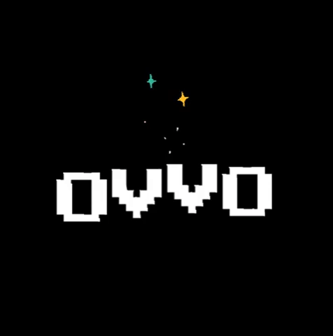
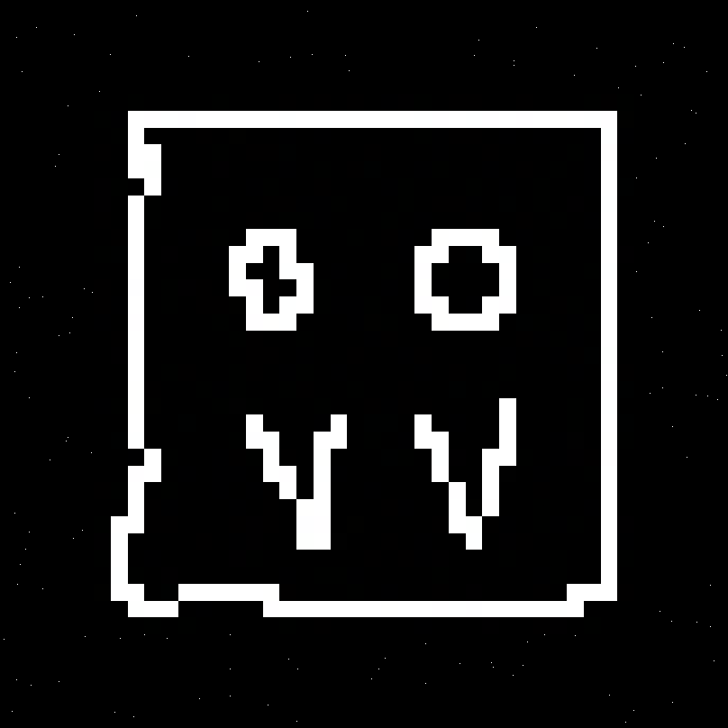
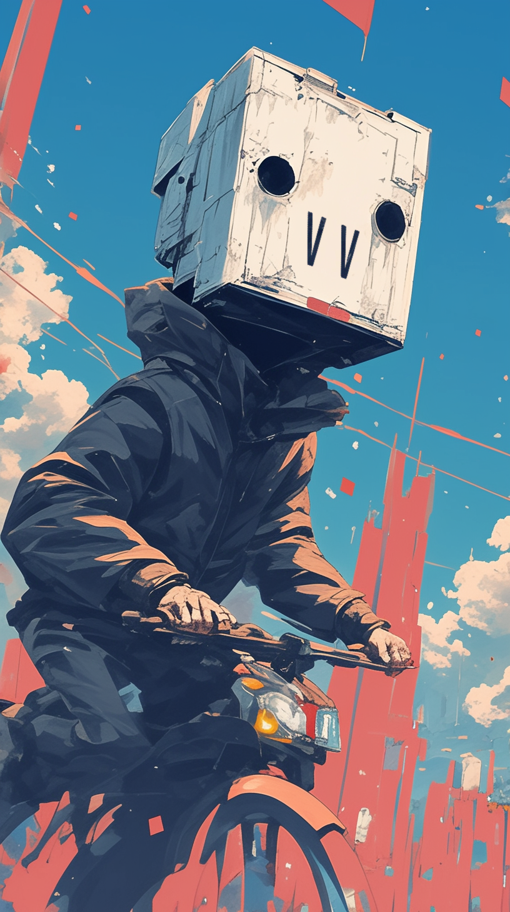

OvvO is a generative visual identity built in p5.js: a defined set of rules, a fixed palette and controlled randomness generating a continuous series of unique animated outputs rather than a single static logo. I connected the system to @ovvo_bot, an automated Twitter bot that posted new generative artwork without manual curation or repetition.
The project applied creative coding to brand identity design, treating the visual system as a set of generative rules rather than a fixed asset. It was an early exercise in the automation-driven design work I continue to build today, connecting design systems directly to the code that produces and distributes them.
Interactive sketch: click to refresh the OvvO
Ambient study, after Brian Eno's Light Boxes

Animation 01

Animation 02

Animation 03

Animation 04

Animation 05

Animation 06

Logo mark, animated

Brand mascot: glitch face, animated

Brand mascot: VV, character illustration
Interactive sketch: click to shift the OvvO mark